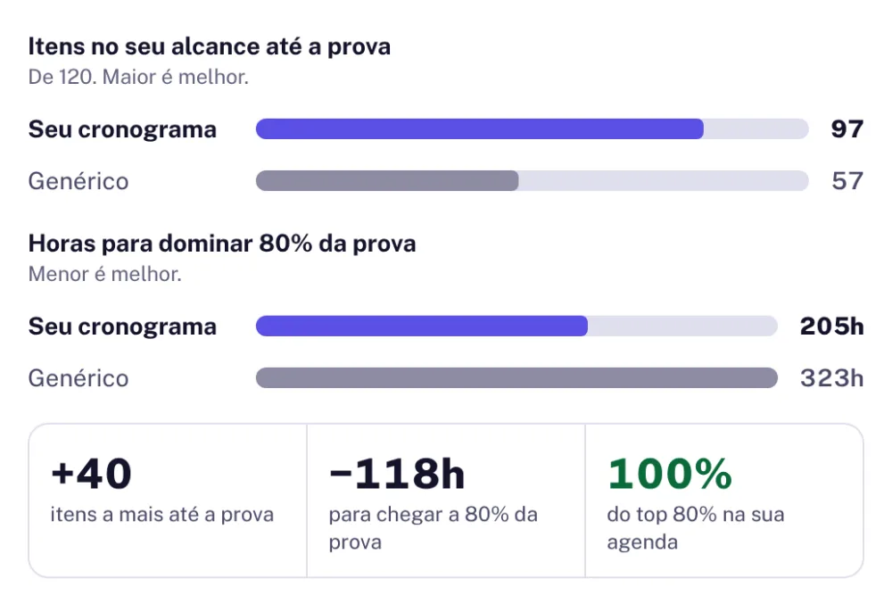
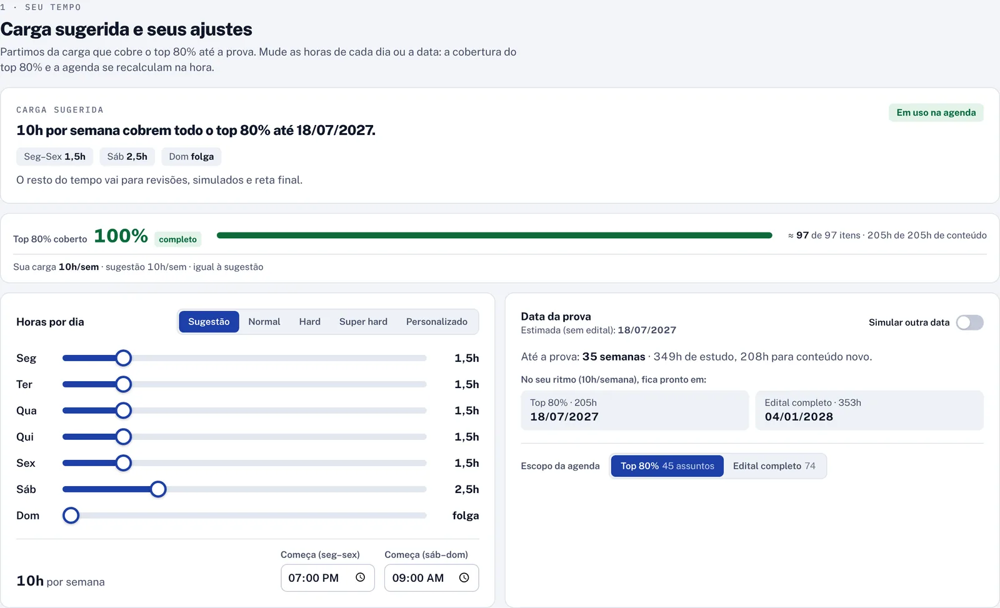
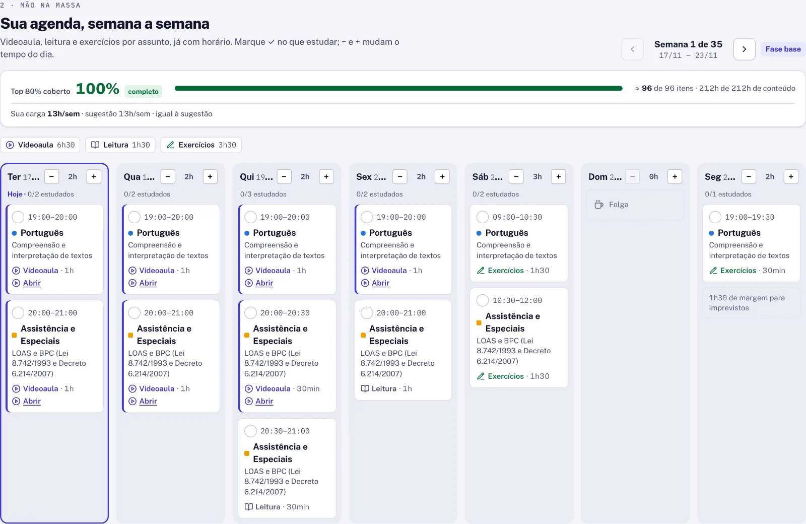
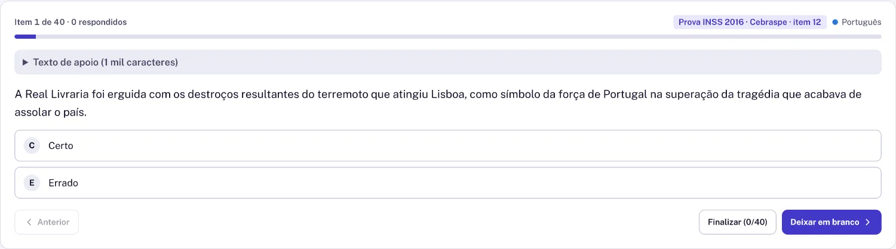
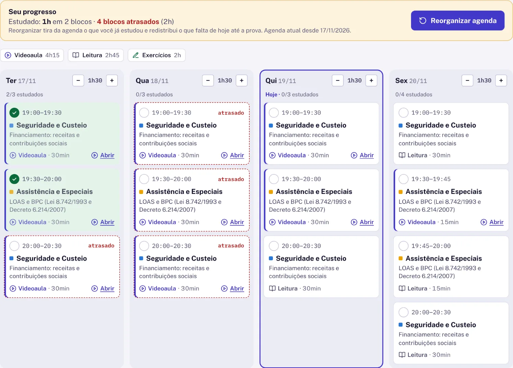
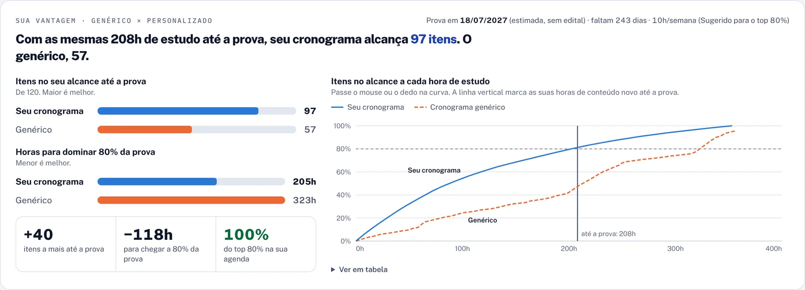
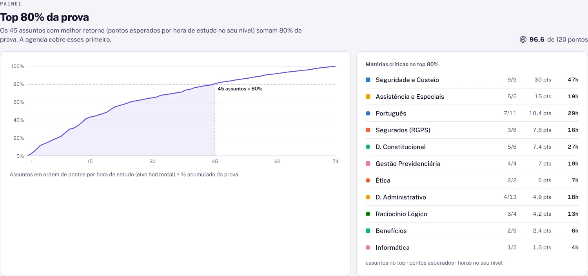
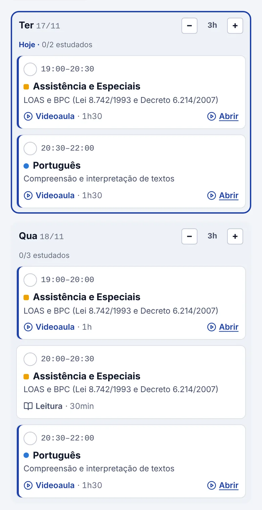

Estude primeiro o que mais cai no INSS. No seu tempo, no seu nível.
Um cronograma montado a partir do edital e das provas anteriores do Cebraspe, que diz o que estudar a cada dia e se reorganiza quando a sua rotina muda.
Funciona no navegador, no computador e no celular. Sem instalar nada.

O problema
Cronograma genérico trata tudo igual. A prova não.
Segue a ordem do edital
Do primeiro ao último tópico, como se todos valessem o mesmo. Na prova, poucos assuntos concentram a maior parte dos itens.
Mesma carga para todo mundo
Quem já domina Português gasta as mesmas horas de quem nunca viu Seguridade Social. O tempo vai para onde você não precisa.
Sem saber se cabe até a prova
Uma semana corrida e o plano desanda. Não fica claro quanto do conteúdo dá para cobrir com as horas que você realmente tem.
Como funciona
Em poucos minutos, sua agenda pronta. Todo dia, você sabe o que estudar.
Diga quanto tempo você tem
Ajuste as horas de cada dia da semana. O sistema sugere a carga que cobre o top 80% da prova até a data e mostra, na hora, quanto cabe no seu tempo.
- Ritmos prontos (Normal, Hard, Super hard) ou do seu jeito
- Simule outra data de prova e veja quando o conteúdo fica pronto

Receba a agenda com horários
Cada assunto vira videoaula, leitura e exercícios, na ordem do que mais rende pontos. Revisões e simulados já ficam reservados no calendário.
- Videoaula indicada para cada assunto, a um toque
- Revisões em 1, 7, 21 e 60 dias
- Tire ou inclua tempo em qualquer dia

Mostre seu nível e o plano se ajusta
Marque as matérias em que você é forte ou fraco e faça um simulado com itens reais do Cebraspe, no formato certo ou errado, com nota líquida.
- Mais horas onde você tem dificuldade, menos onde já domina
- Itens reais das provas do INSS de 2016 e 2022

Marque o que estudou e siga em frente
Atrasou? Um botão reorganiza a agenda a partir de hoje com o que falta. Leve tudo para o Google Agenda ou imprima em PDF.
- Progresso marcado bloco a bloco, mesmo em dias incompletos
- Sincronização com o Google Agenda e arquivo .ics
- PDF completo para imprimir

Genérico × personalizado
As mesmas horas, em outra ordem e outra dose.

Estimativa do nosso modelo para um aluno com 10h por semana, Português forte e Seguridade Social fraca, com prova estimada em 18/07/2027. Os seus números aparecem depois do nivelamento. Não é garantia de resultado.
O que mais cai
44 assuntos somam 80% da prova. O seu plano começa por eles.
Cruzamos o edital com as provas anteriores do cargo para estimar quantos itens cada assunto costuma valer, e quanto tempo ele leva para você.
- Dossiê da prova: matérias, peso no edital e histórico por assunto
- Ordem por pontos por hora de estudo, ajustada ao seu nível
- Atualizado para o edital oficial quando ele for publicado


No dia a dia
Abriu o celular, já sabe o que estudar hoje.
Horário, assunto e atividade de cada bloco. A videoaula abre com um toque, e você marca o que terminou ali mesmo.
- Funciona no navegador do celular e do computador
- Sincroniza com o Google Agenda, com o que você já estudou em verde
- PDF para quem prefere estudar com o plano impresso
Planos
Comece hoje e chegue à prova com o essencial estudado.
Pagamento único, acesso até a data da prova.
Essencial
O cronograma personalizado, do primeiro dia à prova.
- Agenda diária com horários até a prova
- Top 80% e dossiê da prova
- Simulado de nivelamento com itens reais
- Registro de progresso e reorganização
- PDF completo e arquivo para o Google Agenda
Completo
Tudo do Essencial, atualizado até o dia da prova.
- Tudo do plano Essencial
- Atualização para o edital oficial: conteúdo, data e peso das matérias
- Sincronização direta com o Google Agenda
- Suporte para ajustar o plano à sua rotina
Checkout (Kiwify ou Hotmart) a configurar. Preços em definição.
Garantia de 7 dias
Se não for para você, peça o reembolso em até 7 dias após a compra e receba 100% do valor de volta, sem perguntas.
Dúvidas
Perguntas frequentes
O edital do INSS ainda não saiu. Vale começar agora?
Sim. O conteúdo do cargo é estável entre editais, e o cronograma parte do edital de 2022 e das provas de 2016 e 2022. Quando o novo edital sair, o plano é atualizado com o conteúdo, a data e o peso oficiais (plano Completo).
Eu trabalho e tenho pouco tempo. Funciona para mim?
É justamente para isso. Você informa as horas reais de cada dia e o sistema mostra quanto do conteúdo prioritário cabe até a prova, começando pelo que mais rende.
Preciso instalar algum aplicativo?
Não. Funciona no navegador do computador e do celular. Se quiser, leve a agenda para o Google Agenda ou imprima em PDF.
E se eu atrasar ou faltar alguns dias?
Marque o que estudou, mesmo que o dia tenha ficado pela metade. O botão "Reorganizar agenda" redistribui o que falta de hoje até a prova.
As questões do simulado são reais?
Sim. Os itens vêm das provas do INSS de 2016 e 2022, aplicadas pelo Cebraspe, com a origem indicada em cada um.
Vocês garantem a aprovação?
Não. Ninguém pode garantir aprovação. O que o cronograma faz é organizar o seu tempo para estudar primeiro o que mais costuma cair, no seu nível.
Como funciona a garantia?
Você tem 7 dias a partir da compra para pedir o reembolso integral, conforme o direito de arrependimento do Código de Defesa do Consumidor (art. 49).
Pare de estudar tudo igual.
Veja agora, de graça, como fica o seu cronograma para o INSS.